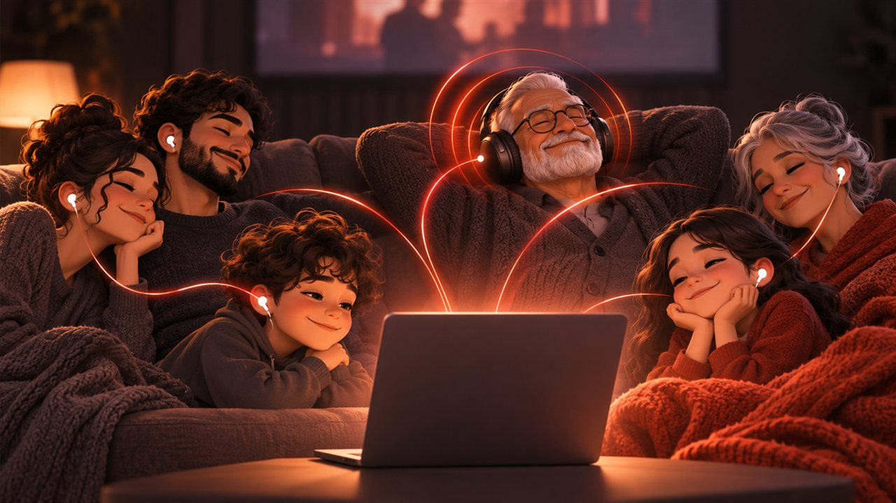

One laptop. Everyone in their own headphones.
AudioShare plays the same sound on several Bluetooth headphones, earbuds and speakers at once, on Mac and Windows. Each person sets their own volume.
Volume keys don't work while sharing. Use the sliders in AudioShare.
Try it: press Share audio, move a slider.
For the moments one pair of headphones isn't enough.
Partners
Watch a film in bed together, each with your own earbuds, without waking anyone.
Friends
Share a show or a match on a train, a plane or in a café, with nobody's sound leaking out.

Road trips
Keep the kids happy in the back seat with one laptop and several headphones.

Family movie night
Grandpa at 90%, everyone else at 50%. Each person hears it the way they need.
Three steps, no settings to learn.
- 01
Connect the headphones
Pair Bluetooth headphones or plug in wired ones, the way you always do. Each one appears in AudioShare as a card.
- 02
Switch them on
Turn on every card that should play. Not sure which is which? Press Test and only that headphone plays a chime.
- 03
Press Share audio
Netflix, YouTube, Spotify, games: everything the computer plays now plays on all of them. Stop puts your sound back.
Bluetooth headphones at once works best. Wired ones don't count.
A volume slider per person, or link them to move together.
Typical Bluetooth delay. It varies by model; wired is near instant.
Sent over the internet. AudioShare works fully offline.
Ready in two minutes.
The first time you open it, your computer shows a warning because AudioShare isn't from the App Store or Microsoft Store. Here's how to get past it, once.
Mac
macOS 13+- Download AudioShare-mac.zip and double-click it.
- Drag AudioShare into Applications and open it.
- The Mac says it can't check the app. Click Done.
- Open System Settings → Privacy & Security, scroll down and click Open Anyway.
Windows
Windows 10 / 11- Download AudioShare-windows.zip, right-click it and choose Extract All.
- Move AudioShare.exe to your Desktop or Documents.
- Double-click it. If you see "Windows protected your PC", click More info, then Run anyway.
Something not working? The full guide has a fix for each common problem.
Good to know.
Can I connect two Bluetooth headphones to one Mac or Windows laptop?
Yes, that's exactly what AudioShare does. macOS and Windows normally play sound on one output at a time. AudioShare plays it on all the headphones and speakers you switch on, each at its own volume.
Does it work with AirPods, Sony, Bose, Beats or Samsung earbuds?
Yes. Any headphones or speakers the computer can play sound on work: Bluetooth, wired, USB, the headphone jack, and monitors or TVs over HDMI.
How many headphones can I use at once?
As many as the computer can connect. With Bluetooth, about 3 at once works best; more can crackle because they share one radio. Wired headphones don't count toward that.
Will the sound be in sync?
Wired headphones and the laptop's speakers are nearly instant. Bluetooth headphones each have a small delay that differs by model. On Windows you can line them up with the Delay sliders and Test sync. On a Mac, the same kind of headphones for everyone works best.
Does it work for Netflix, YouTube, Spotify and games?
Yes. AudioShare shares everything the computer plays, from any app or website.
Does it work on iPhone or iPad?
No, Apple doesn't allow it there. iPhone and iPad have their own Share Audio for two sets of AirPods or Beats: open Control Center, tap the AirPlay icon, then Share Audio.
Is it free? Is it safe?
Yes and yes. It's free, works without internet, and collects nothing. The warning the first time only appears because AudioShare isn't from an app store.
Press play once. Everyone hears it.
Free for Mac and Windows.